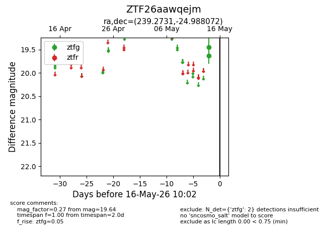
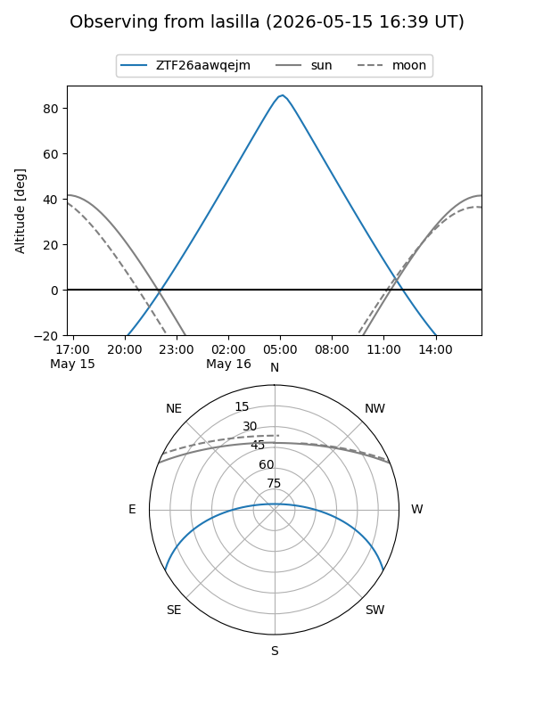
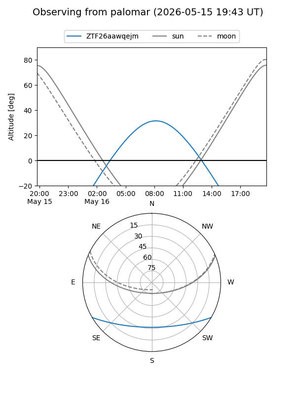

ZTF26aawqejm
Target ZTF26aawqejm at 2026-05-16 10:04
Aliases and brokers:
FINK: link
Lasair: link
ALeRCE: link
alt names
ZTF26aawqejm (ztf,fink_ztf)
Coordinates:
equatorial (ra, dec) = 239.2731,-24.98807
equatorial (HMS+DMS) = 15:57:05.54,-24:59:17.06
galactic (l, b) = (347.7418,+21.31797)
Flags:
Photometry:
last ztfg=19.64
2 ztfg detections
Lightcurve

Visibility


Additional plots